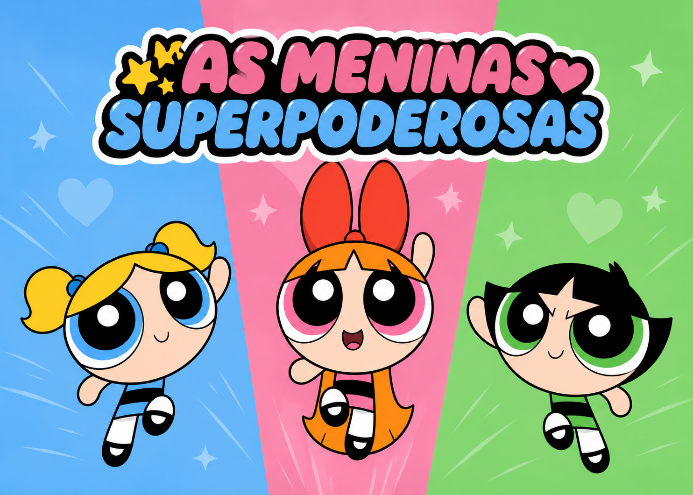

Três heroínas, uma cidade para proteger!
Florzinha, Lindinha e Docinho são um trio de super-heroínas criadas pelo professor Utônio que em um experimento em que ele misturou açúcar tempero e tudo o que há de bom porem acabou derrubando o Elemento X na mistura e então a fórmula explodiu e deu a vida a três irmãs super poderosas